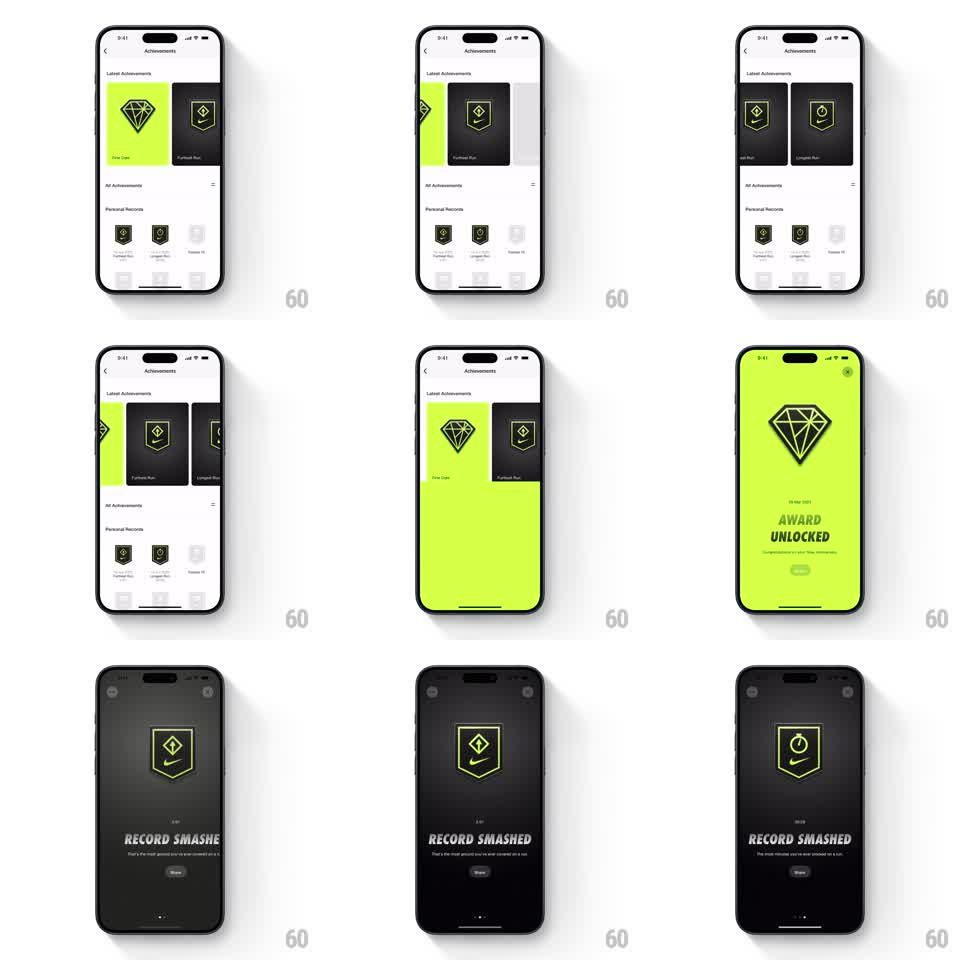

Media
Frame-by-frame

Rebuild this interaction 1:1: Nike Run Club's achievements - tapping a card in the Latest Achievements carousel morphs it into a fullscreen award view (volt "AWARD UNLOCKED" diamond or dark "RECORD SMASHED" banner), swipeable between achievements with page dots.

Rebuild this interaction 1:1: Nike Run Club's achievements - tapping a card in the Latest Achievements carousel morphs it into a fullscreen award view (volt "AWARD UNLOCKED" diamond or dark "RECORD SMASHED" banner), swipeable between achievements with page dots.
## Integration
Integration: stack-agnostic spec - springs given as stiffness/damping, timed motions as duration + curve; map every value to your framework and animation library of choice.
## Scene
List screen: "Achievements" nav title, a horizontal Latest Achievements card carousel (volt diamond card, dark banner cards), then All Achievements and Personal Records grids. Detail: fullscreen takeover - volt background, large outlined diamond badge, date, "AWARD UNLOCKED" headline, sub-line, Share pill button, X top right; sibling achievements are dark variants ("RECORD SMASHED" with a banner badge). Page dots at the bottom.
## Motion spec
Pattern: card-to-fullscreen shared-element expansion.
- Tap: the card's background color floods outward to fill the screen (the card bounds expand to screen bounds over 350ms, ease-in-out) while the badge graphic scales up and recenters (shared element, same 350ms).
- Text content (date, headline, Share) fades in after the expansion lands (opacity 0 to 1, translateY 10px to 0, 200ms).
- Horizontal swipes move between achievements: the badge slides out and the next slides in (translateX, spring stiffness ~280, damping ~26) while the background crossfades between volt and dark (300ms); page dots update with the swipe.
- Close reverses the expansion: content fades (120ms), then the screen collapses back into the card (300ms, ease-in-out).
## Calibration
- The badge must read as the same object across the transition - no fade-and-replace.
- Background color is a per-achievement property; it crossfades on swipe, never slides.
## Reduced motion
Card to detail is a 200ms crossfade; swipes crossfade without travel.
## Don't miss
- The carousel keeps peeking neighbors on the list screen - cards are not full width.
- Share sits inside the detail view as a small pill, visually quiet next to the X.